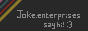

the small blog: random thoughts, musings, logs and things that don't need a long-form post. wouldn't be surprised if nobody reads these tbh, but they're fun to write!
i rewatched ping pong the animation recently for the first time, i've watched it once before a couple years ago and immediately declared it the best anime i'd ever seen, upon a rewatch? it's even better than the first time, absolute classic, i've recently regained the ability to cry and god i cried for like 2 hours straight watching those last 5 episodes. absolutely incredible.
anyway so, one thing i've been thinking about recently is the ending of ping pong, it's sort of weird and definitely something that some people really don't like (though i'm a big fan of it)
(huge spoilers, by the way, please watch it if you haven't)
throughout the latter half of ping pong, the show is very obviously trying to build up the final fight between peco and smile, with peco getting back into ping pong with a renewed love for the sport and force of will while smile's streak of domination continues, sure, there's gonna be other people in the tournament bracket that might prevent that confrontation, but it's pretty obvious it's going to happen. throughout peco's whole redemption arc one interesting thing is that they really put an emphasis on his passion for the game and what he's doing, this new peco is a peco fueled by pure passion for what he does, and that becomes more obvious as it goes on.
this leads to the final tournament arc, where every other player (except kong, sorta) is playing purely to win, with little to no actual joy in their play, this ties into alot of the themes of the latter half of the show, which talks alot about *why* people would dedicate their life to something like ping pong competitively, even when they aren't doing it just for fun anymore, the responsibilities and insecurities and whatnot that play into it, peco in the last couple episodes exists as a foil to this, because he's pretty much just driven by passion and the love for the game, he wants to do well because he loves it, not because there's a team relying on him, or because it's all he's got or whatever
at this point the show begins to paint peco as the "hero" that it's been foreshadowing the appearance of for basically the whole show, which is super interesting, and i think paints a picture of a hero ideal that's much more applicable to the average, modern-day person than the more traditional superheroes or just generally physically imposing heroes we're all used to - the people that'll lift up a car or a building or get an antidote or whatever to save a person from their death. on the other hand, ping pong, despite obviously having a focus on physical stuff, is more interested in showing an emotional hero - someone that saves people from themselves, and gives them a newfound outlook on what they're doing, preventing them from becoming victim to their own self-sabotage that many of the characters in the show are guilty of.
this is shown through peco beating kazama, whose vice is an addiction to improving at ping pong almost entirely out of an obligation to his school rather than any personal desire to do so, who peco beats simply by having so much fun playing him that it becomes infectious: he stops trying to play super seriously and just does what comes to him naturally and enjoys it, and kazama simply can't match his determination to win because of it, he just doesn't enjoy it as much. after this, the match between peco and smile pretty much becomes the same thing, smile *tries* to win by playing seriously, but eventually succumbs to just enjoying it and having fun playing with a friend who is trying as hard as he is. we don't even see the conclusion of this match, the show doesn't care who won, they just want to show peco "winning" by managing to have fun with smile in a way that smile hasn't been able to for a long time (and he actually does smile!), to the show, that's the conclusion that matters most
and i think that's something that really is more important to most people nowadays than a more physical hero, because really, most of us aren't fighting for our lives every day on a literal level, we're trying to navigate the capitalist hellscape we're all stuck in which really doesn't lend itself very well to like, good mental health or anything. it's so easy to lose sight of *why* anyone does anything nowadays, or who we are and what we want, and ping pong's idea of the hero is the answer to that: someone who comes in and shows us what we're missing, changing our whole perspective on things in an instant, wouldn't that be nice?
i've been thinking today about how impressive spore is, sure, it's arguably incomplete, jank, unstable and just generally not as good as it really could've been, but spore is still very very impressive, and to me there's 1 bit that's suuuuper cool to me
one of my favourite bits about spore is how the whole game takes place in a continuous, single world, even across multiple saves! spore takes place across multiple stages of evolution, as a player you start as a cell, evolve into a land-based creature, then from there go through an rts-like tribal and civilisation stage, before going into space. all these stages take place on your home planet, so when you hit space, it's very cool to have an entire galaxy of planets open up to you, and this is where one of spore's coolest tricks comes in.
in the space stage, not every species you find is space-fairing, sure, lots of them are, but you can find planets going through all of the stages you've been through, you can find lush planets filled with the same land-based lifeforms you once were, you can find planets full of different tribal species, and even ones going through civilisation stage. and that's fine, that's cool, but the best bit is that these planets aren't just there for show - they're actually playing through those stages themselves! if you watch a civilisation planet for long enough for instance, it'll literally play through the entire civilisation stage and become a spacefaring planet which you can communicate with, isn't that such a fucking cool detail? that there's so many species in the galaxy evolving just as you did in your playthrough, really makes the whole world feel so much bigger and more alive
occasionally in previous stages, you can also find little easter eggs of future stages, like there's a moment in creature stage where a little spaceship can come down and scan you, and that's fun. or in other stages, you can see the other planets in your galaxy, and even their names if you mouse over them, which is, again, cool and fun, really gives you the feeling that your end goal is to go to space
another neat trick spore plays is that it all takes place in one giant galaxy, each savegame is an individual planet in that galaxy, and that's cool, but that means that you can literally find your other savegames in space stage! if you know where you're going, you can make the treck up to whereever that save is, go down and have a quick look at it, it doesn't even have to be in space stage! you can find yourself as a little tribal planet, or a civ one, or probably a creature one. unfortunately you can't blow up that planet or anything, would probably be bad if you could just delete saves like that i guess, would've been pretty cool though!
it's hard to feel like we really get all too many games that really base themselves entirely on super impressive tech like spore did nowadays, that's not to say other games aren't all technically impressive, but you don't see many games where the tech is really the selling point, y'know? like a titanfall is powered by awesome tech, but spore practically *is* the tech, if that makes sense. it's probably a good thing we don't see too many of these, otherwise we'd be getting more tech demos than actual games, but once in a while it's fun to see something unique like spore come along that feels... i dunno, like my computer is really actually generating a whole universe, rather than faking it
anyway! i bought a sewing machine recently (cheap on gumtree) and a really cool friend took me down to a fabric shop to grab some fabric and show me around a bit (i tried going by myself but god without knowing what i was doing it was a little overwhelming, think i started to get the hang of it after a little bit of following her around though
i have yet to actually sew any of this new fabric, so far i've made a choker out of some fabric with some chains in that like, was basically a choker minus the attachment mechanism, initially i was gonna steal a little attachment mechanism off an old choker that i'm sure i had lying around, but couldn't find one :c, so i just reused an old fan cable instead which worked really surprisingly well. was really excited to do this because for years i've wanted to wear more little tech bits! i've got an old cpu (an i7 920 that was practically a golden chip, overclocked super well) attached to my bag, and i've just made a little fabric ring thing out of the same fabric and a resistor, i've always wanted little wires and shit as part of my clothes, i dunno, i just think it's a cool vibe, i guess
anyway, now i'm on the way to making my own clothes, so stuff like that can be less of a pipe dream and more an actual, real thing i can make, so that's cool as shit, i think
i'll probably have to start posting some of my clothes if they're actually becoming projects, so i guess i'll be forced to post fit pics on here lol, oh well, not complaining they're fun to take :p. i've got some fabric already for a skirt which i'll actually have to sew, so that'll probably be what i do next
i've just redone the CSS on this site to have more of a gruvbox-y colour scheme, i've been meaning to do this for a little while, but got pushed to by my cool awesome friend birb who's been setting up a little webring and page with her friends on her site, she wanted me to make a little 88x31 badge for this site when she was linking to it, so i made this:

(as you can tell, art is not my strong suit)
anyway, this (as well as telling a friend who i hadnt talked to in a while about this lil blog which made me feel bad about the state of it lmao) was a good excuse to finally redo some of this site, there's quite a few things i want to get around to doing as well as this, not just visual stuff as well, i think i might restructure things a bit.
if you're reading this currently, you can tell that this page is called the small blog, you can also tell that most of the posts i make are 10+ paragraphs long. clearly i have failed at making this a small blog! so, i think i need to restructure things a bit, i need to get around to making a proper big blog, and both blogs need some work, invidual posts need to be able to be individually linked to and should be their own pages (currently, this blog is just 1 big html file i add to whenever i write a post, which is nice to work on but also sucks a bit), it'd also probably be good if it was possible to do an rss feed or something, i'll look into doing that at some point. i might make some more pages as well, i mentioned on a recent change to the whoami page that i might wanna start posting outfit pics and things, that might get its own page, or maybe just like use the small blog, i dunno
some of this stuff would mean that people would actually be able to follow this blog, at the moment i know for a fact that like nobody actually reads this blog actively, because you can't! there's no way to know when i make a post! (though that's not to say people would actively follow it if i did make it follow-able, lol)
i was really dreading redoing the css, but i'm sorta surprised how ok it was, in general i'm quite surprised by how much i enjoy working on this site despite it being web tech, which i usually don't like at all, i think limiting myself to a very small, simple subset of html makes it actually quite fun to work on, it works like a simple, expressive markdown language, which is actually quite nice!
i've also previously hated on the whole html/css separation before, thinking that html should just do everything, but i actually don't really agree with that anymore, i think it's quite nice that i can have my simple markdown-y language, and then i have a separate system on top of that that describes how it should look visually, it's quite a powerful system, and i think it would work quite well for game ui
that being said, i'm doing very simple stuff with my site, i'm not convinced i'd enjoy using these technologies on a larger scale, or to create more visually involved elements. if i wanted to create game ui in html, i think that separation between html and css would be lost, i think i would have to do much of the positioning of the elements of the ui in html, which would mean that html was driving more of the visual appearance than i'd like, maybe there's some other way things like this could be handled for games, or maybe it wouldn't be that bad! i might just be overthinking
there are definitely lots of stuff i don't like with html though, it's not a perfect text formatting language, as much as i'm ok with it, again, anything more complex than just formatted text feels really clunky, even just in this article, if i want to define alt text for an image, that doesn't come up on hover, apparently there's a separate alt text tag for screenreaders, and a title tag that's shown on hover, that feels really very strange
also if you look at the css for this site, you can see that i'm styling codeblocks using a "codeblock" div (which i actually inherited from birb's css, i based my site off her's), rather than just the built in <code> tag, i tried styling just the code tag, but i can't get the styling for it to work without wrapping it in that div, which sucks
anyway, entirely unrelated, i had some thoughts about minecraft. yesterday, i played the re-console modpack, it's a pack that tries to recreate the legacy console edition of minecraft (which was the version shipped on consoles, created by 4j studios, before the pocket edition-based bedrock edition that's shipped on all platforms except linux for some reason now) on top of a modern version of java edition. it's a very impressive little conversion, it's definitely not perfect (it decided my gamecube controller was the only controller it wanted to use, until i tried to configure the 6th gamecube controller it apparently detected me having plugged in, at which point it decided it was disconnected and used my xbox controller instead), but it recreates the ui and general feel of that version of the game very well, it definitely feels like it'd be at home on a htpc on at tv, much more than the java edition does normally at least, which doesn't even have controller support in current year, somehow
the interesting thing about this was that it felt relaxing to play, slower paced, easier to get into, there was less incentive to optimise and rush the game like i normally would, this was something i'd previously seen when playing the pc gamer demo of minecraft (which is based on beta 1.3_01), which, again, felt really great, simple and felt like there was less incentive to play it in an optimised way compared to a modern version of minecraft. i think alot of that was down to 2 things, reduced information through being unable to access debug information (f3 for coordinates, mainly), generally less stuff to fidget with (couldn't really mash f3 or f5 when running around, couldn't really jump all the time, sprinting either doesn't exist in beta, or in the mod, didn't affect my fov, so there was less feedback to it), i think all these things combine to make a game that lends itself to slower play, which i think benefits a sandbox like minecraft, creation is generally a slow, gradual process and (vanilla) minecraft is at its best where creation is the end goal, i think
i still prefer beta in this regard, i think most of the changes made after beta to make the player stronger really hurt the incentive to build in many areas, mobs makes enemies a non-issue since you can just outrun them, so there's less incentive to fortify all of your map against mobs. beds (yes, those are in beta 1.3, oh well i don't use them) do similar things, setting your spawn point makes it less important to build up spawn and there's less reason to build cool minecart tracks and paths and nether tunnels between spawn and your base, as well as letting you just disable mobs altogether. i think this really makes the building experience in survival less driven by the game mechanics and much closer to building in creative, where you're all-powerful and can just build whatever. maybe for some people the additional creative freedom is great, but in a survival mode, i think creating something that is not only pretty and cool, but also has practical usage is rewarding and is a good way of incentivising that building outside of just a player's own desire to build stuff for its own sake
so sure, maybe it's annoying that beta doesn't let you move around as fast, or to gather resources as quickly, and on paper those are great qol changes, but in practice i think they do just make lots of parts of the game less interesting, and even invalidate stuff (what's the point of putting lots of time into building minecart track with chests to move lots of resources if you can just like, literally fly 30 chests worth of stuff whereever, come on man, that just makes that mechanic mostly pointless)
honestly i think this brings to mind alot of my problems with live service games and what the aim is of developing a live service game where there isn't often a final product in mind. yes, minecraft is a live service game (as much as i wish it wasn't, i don't think it's needed any new updates for quite a while to be honest), the problem is that a live service game can never have a final goal for its development, it's always adjusting to player expectations and what they want from the game, any feature that feels a little bit underbaked compared to other parts of the game, or that doesn't tie into other systems enough, or that doesn't address the modern, incredibly powerful minecraft player's needs well enough is always on the list for stuff that needs re-doing. i've had this concern with apex as well, sure, apex is getting better, but it's weird that there's no final goal for apex, content will keep being made and added, and systems are always at risk of being reworked if they don't fit the modern player well enough, that feels weird to me, that a mechanic someone loves could just be yoinked from the game and never come back, or at least in its current form, i guess i can't entirely explain my feelings on it, they're a bit conflicted, oh well. i think it makes for a game with less unified design, some mechanics are built with one now outdated set of design goals in mind (minecarts, for instance), while some other mechanics are built with the new, modern, flying, never dying, god-killing player that can industrialise and destroy an entire map (which is fun and i do enjoy, mind you), and a game where half of the mechanics are built for one game and half for another makes for a somewhat disjointed feeling game, i think, and these updates all being delivered gradually means that any given point in time this will always be the case, versus if all these changes were developed at the same time, for like a sequel or something
i guess my feelings on this are like a combination of issues with the development processes of these games and how it affects the way the game feels and also an issue with preservation, and old versions of the game not being available, the latter doesn't really apply to minecraft anyway, since they're really great about preservation generally and keep old versions of the game around and playable, even today, so that's pretty cool, i probably should've considered my feelings on this a bit more before brain vomiting feelings onto this post :p
dont have too many thoughts on this one honestly, it's a solid doctor who episode, i definitely think it's better than the other two specials, but, again, i wasnt massive on the ending (though its mostly just weird, not as awful as the star beast
i see why they did the whole gimmick of the toymaker faking accents and being a little racist, its a part of the character's legacy, but i think it mostly fell flat, it just felt a bit ameteurish for me, often felt more like *an actually bad* german accent than one that was bad intentionally, if that makes sense
the only other thing is the bi-generation, me and my girlfriend both agreed it was weird, it's fun to have some multi-doctor action but it comes at the cost of the whole moment of regeneration, it immediately kills the emotional weight of the regeneration and the final fight of the episode (though that was also done by it not being shot all that well and feeling like it ended super suddenly, but oh well). finally, while the whole time travel therapy idea is interesting, the execution just doesn't work for me, the doctor living with donna and mel at the end does just feel like 10th doctor fanfic, it's just too cute and nice and perfect, and especially doesn't contrast well with the emotional stuff i talked about liking in power of the doctor. i would've much preferred the regeneration was just real and we got a more traditional ending of the new doctor saving the day, showing off who they are, then saying goodbye and moving on.
overall, it's weird that this was the anniversary special and not power of the doctor, one feels like a (very fucking messy) tribute to the whole show, the other feels like a return to form with a tribute to some very specific parts of the show included, neither really manage what they're setting out on but i think i did enjoy power more, which was a surprise to me
oh also they could've made the setting up a unit spinoff stuff a bit more subtle, come on it's so obvious
it's weird watching the 60th anniversary specials immediately after power of the doctor, which in itself is basically an anniversary special with all the classic stuff it brings back
these two episodes especially really don't feel like anniversary specials, they feel more like 10th doctor and donna fanfic than original episodes, and really don't celebrate the history of the show super heavily (sure, the star beast is based on a comic but that's pretty obscure, it's cool they paid tribute to that but i don't think a fairly obscure comic is the main thing for *the 60th*, especially when it's an adaptation of the story rather than an actual tribute - would you call human nature a tribute to the vnas? no you wouldn't. shut up)
when the star beast first came out, me and i think most doctor who enjoyers were really starving for content, most people didn't particularly like 13's era, so that wasn't getting many rewatches, so for many people the "newest" content was capaldi's stuff, which at this point is approaching 9 years old. when i first watched it, i thought it was pretty incredible, and i think that was mostly down to the shots and direction and music and the general pace, it really does feel like nuwho in a way that 13's era really never managed to nail i think, but with the visual quality and apparent budget of 13's era (+ disney money so even more), actually rewatching the episode now? it's kinda ass
the actual episode definitely falls off a bit as it goes on, the start of the episode is great, has a lightning fast pace, introduces a bunch of characters, it does alot and it feels great, but as it goes on it just gets worse. when me and my girlfriend were watching the start she specifically called out that she thought that the way the start of the episode talked about rose being trans was really subtle and great, and it *is* honestly, but as it goes on rtd seemingly just becomes worse at drawing attention to it. i thought the meep pronoun joke was funny but also a bit forced (has some like, shadow the hedgehog "i dont use pronouns you will refer to me by my name" sorta energy to it), but god the ending of the episode is so honestly awful, if 13's era is mostly meh then this feels actually bad. as someone that is nonbinary like, it's hard to tell if the whole rose nonbinary saves the day ending of the episode is supposed to be saying something about her being nonbinary or her gender identity or anything (the episode never mentions her being nonbinary before this, so most people think she's just binary trans, but i guess she could be nonbinary), or if rtd just thought it'd be clever if he said nonbinary in response to donna's binary brain shit (i think this is more likely to be honest). the ending is a classic rtd asspull but it feels like he's trying to make it inclusive in a way that i do not think he entirely understands, i've seen a few people say that there's an implication with this that rose is binary trans or nonbinary or whatever *because* of the metacrisis, which god that feels weird, but i don't think that was intentional. also i dont know why they shit on "male-presenting" people at the end, the doctor was *just* a woman, if they wanted to do a trans narrative why do they not mention this? how would something about male-presenting people being shit affect someone who was literally *just* a woman as of like an hour ago? this sucks man, if you want to do an episode on trans people don't shit on any of the genders it just feels out of place
also the doctor is literally nonbinary according to one of the eighth doctor novels (interferance - book one), in which the doctor basically says they've never been a man or a woman. also applying human concepts of gender to time lords that can literally just change gender and body entirely in the way this episode does just does not make sense
anyway enough about rtd trying to write gender things he does not understand, i like the meep, the work on the meep was absolutely incredible and looks fucking amazing, looks a bit goofy when it goes evil though. murray gold's range is definitely a good bit bigger than it was in his previous series, much more variety in instrumentation and the general sound of it now, but the energy is all still there
was going to write more but honestly i don't have very much to say, it's an incredible looking, sounding and feeling episode with more energy to it than really any of 13's stuff, it's a return to form in a great way but most of the episode's actual plot is some of the worst stuff i've seen from rtd, really not a fan
wild blue yonder is pretty good, i think it's a bit overhyped after my rewatch, i was super into it when i first watched it and it got rave reviews but now? it's pretty solid and paced well, it definitely still feels like 10th doctor fanfiction with some pretty awful lines trying to play with catchphrases and things, and honestly 14 and donna almost seem *too* close, it's fun seeing them being friends and i like that but they feel almost unnaturally close at some points compared to their season 4 stories. other than that i think it's cool, the concept is awesome and the reveal of the not-things and trying to figure out who's real at any point is pretty great, i think it does almost end up feeling a bit formulaic though, it falls into a pattern of going from solo horror bit to who's the evil one and back again quite a few times, where the doctor and donna are always going into them at the same time if they're separated. it does mean we never have many times where it's really in question, you can always sorta tell once you know what's going on.
referencing the timeless child and flux is ok, on my first watch where those episodes had been out for years and i'd only watched them once? sure, it felt alot more impactful, but rewatching everything back to back there's definitely less of an impact, i think to some extent there's more emotional weight put on it (especially the flux) than in much of 13's run, but that is somewhat affected by how much more dramatic most emotional scenes are written in non-13 series. honestly i kinda prefer it being more subtle? a mix would be nice, i don't think *every* emotional scene needs to be shouting and tears and music swelling, but it's nice occasionally, i can't say i hate it because i *love* so many of those scenes in capaldi's run.
i think alot of this episode is way worse when you know what's coming, on my first watch it was really suspenseful and had some real mystery to it but on my second time around nothing quite hit the same
anyway, toymaker and then ncuti's stuff next! will have to see how this goes, but i'm surprised with how much i'm honestly not enjoying these specials, i think i preferred the end of 13's run honestly, which is really a surprise to me, but definitely there's a good bit i prefer from this as well
fuck i took too long rewatching to catch the new stuff as it came out, ag
anyway, power of the doctor is such a weird episode, it's an hour and a half long and it's really hard to say it needs all of it, it's juggling so much stuff, from classic companions to the master, dalek traitors, cybermen and a whole bunch of other stuff, and while alot of it is cool spectacle that works well for a bbc centenial special, it really does feel like spectacle more than meaningful content
my favourite bits of the episode were probably the start and the end, i think the little mini adventure almost gone wrong that causes dan to exit the tardis is really cool, it's a shame he wasn't really in the special but i'm not sure he would've fit, especially with the number of characters, and it probably would've taken away from yaz and the doctor's relationship, which the episode really wanted to focus on (and rightfully so, but i'll get into that later)
this episode is, weirdly, pretty much a direct sequel to flux and the timeless children, tonally it feels an awful lot more like flux than the prior 2 specials, with lots of locations, massive cgi aliens and planets, multiple copies of the doctor again (come on, we just did that like 3 episodes back), and vinder! for some reason. initially when writing this i wanted to say it was *just* a flux sequel, but half of the stuff it takes is from the timeless children! the pathetic master makes their return for the first time since missy, and this time they've escaped gallifrey alongside the regenerating cyber-masters he created in that episode, along with a revived clone of ashad, the lone cyberman, who's always pretty cool to see as like a boss character
seeing the cyber masters again was super cool actually, it's really nice to see such a huge threat come back rather than just being forgotten or written out, and it's especially interesting since the writers really had an out, given that the cyber masters and the master seemingly all die in the timeless children, but knowing the master it would've been weird if that was real, the episode opens the aformentioned mini adventure with the cyber masters, so immediately we know the sorta thing we're getting in this episode. it definitely was a little weird seeing them pop up after non-regenerating cybermen as a villain in flux
these specials continue the "13th doctor is very emotionally closed off" thread that came up an awful lot throughout flux and *especially* the specials, it also touches on yaz having a crush on the doctor a bit, it's not really explicit with it, but there's definitely a good few points where you can tell that's what they're going for, i honestly really like this romance, partially because it's not really reciprocated by the doctor. we've slowly seen yaz grow closer and closer to the doctor over 2 and a bit seasons at this point, trying to become more like the doctor themselves (very much like clara), and it honestly feels super natural, it almost happens in the background where we don't get many episodes that explicitly touch on it, you just get the occasional "oh yaz knows something" or "oh yaz feels a bit too eager to put her life in danger again" or "oh she might be addicted to this", but it's never the forefront, i think that makes it feel an awful lot more natural than clara's similar arc, which, while it ended super well, honestly felt a bit much to me at times, and really felt like it happened too quickly (remember, flatline is in her first season with capaldi!)
but anyway, i think this gradual arc works really well as a romance, we see her getting closer to the doctor over the entire run, so when it's *finally* explicitly stated in the specials, it feels pretty natural. it's also pretty awesome i think that the doctor doesn't reciprocate it. this isn't because i'm some asshole that just wants to watch companions suffer, it's because i *dont* mind romance being explored in doctor who, but i dont like the doctor getting involved with it, it's just such a weird age/power gap between *some human* and 2000+ year old thing that's basically a god, previous showrunners had been absolutely awful at exploring this dynamic but having 13 explicitly shy away from romance (to the point where it's honestly unclear whether she actually wants to be yaz but feels unable to, or just only likes her as a very close friend) really works with her characterisation *and* lets us explore this dynamic in a way i like, i think it's super super great, and the way it ends the special with those beautiful shots of the two sitting on the tardis honestly made me a little emotional, it's really really well done
the daleks are back in this! i don't really like them or the cybermen particularly, while the cybermasters are cool, they're still basically just used as killer robots as they almost always are, and the daleks are basically this too, the traitor dalek at the start of the episode was a pretty cool concept (it's especially interesting seeing a dalek that actually considers its own idealogy and realise the internal contradictions of it without being turned into a human or anything), but outside of that there wasn't anything super interesting with either, i would've preferred just one, or even a solo master story, the master totally could've built that volcano machine themself and probably could've powered the forced regeneration thing and made both of them mostly unnecessary, but they wanted huge stakes for this episode, even if it means they're a little artificial
ashad being back also contributes to the whole "cybermen being killer robots" thing, i like ashad and i think he's cool, but he is basically just a military commander/miniboss, his whole thing about being a partially converted cyberman that really truly believes in the cause is a super cool concept, but i feel like it's never really explored what would create someone that would willingly join the cybermen like he does, which is a shame, because that sorta stuff would've made for a really interesting cyberman story, what makes someone willing to support a cause that considers them disgusting? how does a movement based on deindividualisation benefitting from a unique individual with thoughts and feelings and shit say about that movement? i dunno, would've been cool, but instead he's basically just a big bad evil guy
most of the classic stuff, from past doctor cameos to companions, while cool, definitely feel a bit forced i think and contribute to the episode really feeling like there's way too much stuff going on. some scenes are really great (the callback to the master being half-cat is so good), but overall teagan and ace really just feel like they're there to be teagan and ace and it wouldn't really be very hard to write them out of the story, they aren't super essential to any of it. the whole "guardians of the edge" concept *is* cool and i won't hate on that, and i will say the scenes of both of the companions talking to their doctors was pretty great (though, i can't imagine how it sounds to people without context, 5 just saying "adric" out of nowhere made no sense to me on my first watch lmao, does feel a little forced even now tbh). i hate to criticise actors but their delivery also felt a bit weird too, i dunno how to describe it exactly, don't have the word for it
the master being rasputin is really really cool, it's sort of unclear whether he replaced rasputin at one point, or whether he just was rasputin the whole time, i'd be cool with both. it's cool seeing the master being so into disguises and manipulation in a more sinister, almost cartoonish way than he has ever been in nuwho, sure, simm manipulated his way to downing street, but that's just standard politician shit, seeing the master be more explicit (especially with the whole "i am the master and you will obey me" line coming up a few times) definitely works, i don't think i could see missy or even the simm master doing it, but for dawahn it just sorta fits, the dance scene is funny, i dunno if it fits but its a fun time
anyway, everything from the forced regeneration to the end of the episode is great in my opinion, while the master's plan is maybe a little confusing and weird and contradictory (when isn't that the case though), i really like the idea of them just being so fucking annoyed at their inability to make the doctor stoop to their level even after an existential crisis and gallifrey destruction, that they just give up and say "ok i'll just become the doctor so that they're forced down to my level", the master-doctor sort of even trying to be the doctor was cool and i wish there was a little more of that, might've been cool to show the master-doctor maybe being sorta good initially, but then eventually have them nonchalantly saying some awful shit in the process (maybe they're dealing with some evil ceo type asshole, but instead of trying to explain to them the value of human life or whatever, they just get annoyed at him and kill him, something like that that's a little surprising when it happens). yaz just abandoning the master-doctor was pretty cool, and the scene of the master just chilling with their whole every doctor costume watching the world burn was really well shot, i wasn't super duper massive on how they got resolved though, the thing with the fugitive doctor hologram was a little contrived i think. one weird thing was i really sorta prefer 13 in the master-doctor's outfit to 13 in her normal outfit, i dunno it somehow works better, feels like it has a little more going on, even though it's purposefully a bit shit. one other cool thing is that (if you subscribe to this ordering), the end for the dawahn master leads into missy super super well, they go from trying to take the doctor down to their level, to trying to do the same thing themself, to genuinely trying to befriend the doctor again, and even becoming more like them after *literally* being them for a bit
anyway, the end is great, the doctor fixes everything up with all the companions once they're back, the master gets the last laugh by shooting the doctor with a big giant laser, yaz saves them in denial of whats just happened, goes through the stages of grief before accepting that 13 is going away now, and they have a nice silent moment together watching the earth before they go. sci-fi in general to me is at its best when its quiet and small, even with the backdrop of such a massive, amazing, advanced world behind it. you can have all the amazing technology or the biggest scale ever, but in the end these stories always boil down to people just talking and figuring themselves out, even with the world at stake. this is why i love the doctor falls so much as well, it takes a high-concept scifi story with huge stakes and turns it into a small scale thing about friends trying to convince other friends to be kind before to just a couple people, even if it won't mean saving the world.
i wasn't 100% emotionally great while watching the episode so this might've influenced this, but those last moments with yaz and the doctor honestly made me emotional, the shots were incredible and the acting was great, super super great without being the super overdramatic emotions we often get in nuwho, it's a little toned down and a bit more subtle and i love it
david tennant being back is funny, i dunno, i'll probably review the anniversary specials next i guess
didnt like it :c
i went to an arcade on the weekend with some people i hadn't met before and it was really nice, got to know lots of really cool nice people (maybe this whole making friends as an adult thing isn't impossible after all! :3)
lots of great games there, it was pay to entry so didn't have to pay for any of the machines, highlights were puzzle fighter 2 turbo which i did not expect to be as good as it was, r-type and r-type leo (complete bullshit though), jojo heritage for the future, melee (this was on a wii u and honestly the setup sucked, no characters unlocked and it was on wii u pro controllers, played a set and it was still so fucking good to finally be able to play some melee again though
one of the more interesting ones i got introduced to was maimai, it's rhythm game played on a bigass 40 inch touchscreen with a ring of buttons surrounding it, some of the people i was at the arcade with were really into it already and could get some insane scores (one of them even brought gloves just for it, so you know they were very serious), interestingly i got to see the machine run its boot sequence at one point and it displayed a big warning about it not being licensed for play outside of japan, oops i guess?
it was really fun to play but it nerdsniped me a bit - maimai is only available in arcades, but one thing i've heard over the years is that most arcade hardware is like, basically just customized consumer hardware. i first heard about this when i heard about the sega ALLS arcade hardware, which is literally just a pc with some drm, it's got like a gtx 1070 and an i5-6500 it is quite literally a pc running windows 10. and you see the same thing with consoles as well, the sega chihiro which is what ran ollie king (the skateboarding game with hideki naganuma music) is basically a beefed up original xbox, iirc you can just boot the chihiro games if you've got a modded xbox with a ram upgrade to 128mb, and whatever it was that ran mario kart GP was basically on a gamecube i believe
so, the interesting thing about this is like, if arcade hardware is basically just customized consumer hardware with some drm to prevent unauthorized machines, what's stopping me from just like, grabbing the binaries maimai is running from someone that's dumped them online and just janking up my own maimai machine, maimai is running on (i believe, online sources aren't consistent on what the various versions of maimai are running on exactly) sega's ringedge hardware, which was a pc with an i3 540 and a gt 545 and the embedded equivalent of windows xp
so i did that! i tracked down a dump on a pastebin (not hard to find, google "maimai finale dump" and scroll down a little) and got it running locally, interestingly the binary seems to have basically nothing removed from development, there's a fair bit of logging that's just disabled at runtime in the binary but is still there, and messing with the game config lets you put the game in dev mode, enable/disable events, run without online connectivity or serial or any of the customised hardware, lots of stuff
the game even comes with (quite bad) keyboard controls built in which is nice, i guess maybe the buttons that are on the maimai cabinets are essentially just a fancy usb keyboards, wouldn't be surprised, the annoying bit was the touchscreen since there's no way to use mouse controls for it, and i don't have any functional x86 hardware that has a touchscreen at the moment
the whole game is built on a propreitary engine called teaGfx, it's unclear whether it's actually a proper engine or closer to a framework though, it's got subsystems for input, graphics etc but i wouldn't be surprised if it's closer to a development library than a full engine. the game uses mostly windows and directx formats (wmv for video, dds for textures, xwb for audio) but uses a custom format for menus called .sbscene, unclear how they handle localisation, i couldn't find anything that just had strings, it almost looks like they just have strings in the .sbscene files and ship separate versions of those for different regions, but i would be unhappy if that was the case
haven't managed to get it running under wine unfortunately, just crashes on startup after window creation, so have been forced to run it under windows 10 ltsc, maybe this'll finally be the motivation i need to set up a proper qemu setup to virtualise my on-disk windows install? i had this set up under virtualbox at one point, but really should figure out vfio-ing my igpu into the vm, or maybe i'll figure out what it's doing, i dunno
anyway, *theoretically* now i've got the binary, i don't think it should be all too hard to build a maimai machine, sure it'll probably be a bit small and shit and not have a bunch of the capabilities of a retail one (no clue how i'd do multiplayer, but maybe it'd be possible i dunno), but all it really *needs* to be playable is a touchscreen and some buttons which i'm sure wouldn't be hard to hack together and a windows xp-capable pc, so maybe i'll do that at some point! more likely i will just forget about it though, but oh well
in general i would really love to build a proper arcade cabinet someday, maybe even for a game i made! it's really cool being able to have essentially an entirely custom system and control scheme that's designed specifically just for one game, and having controls be on a cabinet rather than a handheld controller lets you put more force into an input (i.e. a whole hand pushing an arcade joystick, vs just a thumb on a controller), which i think really makes it easier to really get into a game. if it wasn't my own game then i've always thought it'd be nice to make a lethal league cabinet of some sort, would fit very well with the game. maybe there's some way to work with an actual arcade to make a game and/or cabinet for them, that'd be pretty cool.
recently me and my girlfriend's first time doctor who watch/my rewatch got to jodie whittaker's run as the doctor, i already wrote a post on my cohost about my thoughts on s11 when we finished that, but we've just finished s12 and i was honestly pleasantly surprised by it
s11 was super weird, there were points when i thought the episodes were solid conceptually or did something cool but it never really feels like the doctor is a strong force within the plot, they're always Just Around and really lack the sense of authority that previous doctors (especially compared to 12, since he's fresh in your mind when starting 13's run) have, which i think is super integral to the character
s12 actually starts off similarly to s11 but is definitely better, the episodes feel like they've got more of a purpose and feel like they're playing with the format more like previous seasons have, spyfall is a pretty solid start to the series, being a solid 2-parter with a globetrotting (and time-trotting, i guess) plot, but definitely it's not the best thing ever, i think at times it feels a bit aimless when it's having to juggle lots of different locations and 2 villains and different historical figures all at once, though it being a 2-parter definitely helps
the music in spyfall also manages to feel a bit more bombastic compared to s11 which is good, definitely this isn't the case for the entire series but it's nice to have something that's more front and center rather than just being background music
additionally i'm not really sure how i feel about the whole master disguising as a nazi thing, like sure it's something he'd do but the way they have to like specifically say "i used a perception filter to hide the fact that i'm indian" and then the doctor takes it off and hands them over to the nazis feels like... a bit weird
the doctor feels a bit more of a force in the plot in these, but they still feel quite similar to how they did in s11
from there we get a whole lotta mid for a bit, orphan 55 feels weird and aimless, tesla's episode is pretty good, praxeus does essentially the same plot as orphan 55 but an awful lot better but still feels a bit aimless, can you hear me has the problem s11 has where they like to just throw out a "wow that's a mythical thing or whatever" without any buildup that the doctor just knows about
fugitive of the judoon is pretty neat, the whole fugitive doctor reveal definitely doesn't hit quite as hard the second time through, it's a cool reveal but i think with the knowledge it's gonna happen the whole episode feels, again, a bit aimless and honestly doesn't build it up as well as something like the master reveal in utopia
the fugitive doctor is a treat though, originally i thought she was basically just better at being the doctor than 13, having more of a presence etc, but now i'm not *quite* as sure, she's great but it isn't quite as large a contrast as i thought it was originally
additionally this episode is broken up by essentially a marvel cinematic universe teaser for captain jack that just pauses the episode occasionally to teleport some of the companions off for a bit which was just entirely unnecessary and also john barrowman should probably not be getting brought back at this point
HOWEVER, after all these is (surprisingly) where it starts getting really good, in spyfall, the master killed gallifrey and that basically looms over the doctor for the entire season, for most of these episodes it's just something that gets mentioned at the start/end of the episode when they're in the tardis, with the doctor being distant or closed off and the companions mentioning it
13 essentially just being bad at expressing emotions and closing herself off to people is certainly a choice after the often quite emotionally charged performances of 12, but it's not necessarily all that bad, and honestly with how 12 dealt with being unable to find gallifrey at the end of series 8, it's not really out of character, it works i think
that being said, this choice becomes a *good* choice in the haunting of villa diodati, where the doctor, faced with an impossible choice between destroying history in the past or letting the cybermen rebuild and conquer the universe in the future, buckles under the emotional weight of everything she's bottled up and just starts being a bit of an asshole and it really gives her a sense of authority, the line about the tardis team's team structure not being flat, but her being very clearly above everyone else in it is honestly great and her being the driving force of this plot with her impossible choice really makes her feel more driven than in previous stories
as i said, it's an impossible choice, so we lead into ascension of the cybermen with her essentially having fucked up the future and having to choose to go fix it herself (again, plot feels more driven by her, which is good), and like idk, she just feels so much better past this point, i think maybe this is the point where jodie gets a feel for how the character is best played, a bit like how peter davidson didn't properly get a feel for 5 until the end of his run, because from here she just feels miles better (though we'll see if this lasts into flux c:)
timeless children is like, fine, the concept is neat but it's very exposition-y which i think makes the reveal very hard to stomach (mind you i actually did sleep through a good bit of this so opinions are still mostly driven by my first watch of it here), i like how the doctor is deadset on essentially wiping out gallifey *again* because of how bad the cybermasters are, but she gets saved from making a morally bad choice at the end by a sidecharacter that got introduced in the previous episode, it's nothing that other doctor who seasons haven't done but it still feels bad
revolution of the daleks is cool, i don't really like jack being in it but, again, the doctor has a real drive in the plot and sense of authority she just didn't have before which is sick, i liked how it was a direct sequel to the previous dalek episode and the soundtrack sampling stuff from rememberance of the daleks was pretty cool, chibnall's handling of the daleks is pretty nice honestly, which them only showing up in specials and never just as a generic villain as moffat was often guilty of doing
anyway, very hopeful moving onto flux! i think possibly after this rewatch i'll have a much fonder opinion of 13's run, even if it's not the best imo
anyway, one other thing i wanted to mention is that frozen onions are fucking awesome to cook with, i read on the internet about people doing it maybe a week ago? and it's so good
literally just like, dice a fuckload of onions and red onions, toss them in the freezer and whenever you wanna use them just throw them in a hot pan, don't even need any oil, they'll defrost in like 30 seconds and then you can leave them in for maybe a minute to give them a little cook, and they're good to go
this might sound like a small thing but it's soooo much easier to throw together a quick wrap or whatever when you don't have to chop anything, literally just need 1 pan and maybe a plate and you can make a bangin wrap in like 10 minutes
i've been doing mine with red onions, pickled jalapenos (i actually toss these in the pan to cook off the pickle juice, it works super well surprisingly) and some sort of meat-y thing, thusfar i've tried some sliced chicken stuff that was reduced at tesco and i've tried some of the vivera vegan kebab meat stuff that's pretty solid, i just season up whatever meat stuff i've got with salt and pepper seasoning (i get this from the asian supermarket, absolutely bangs, pretty sure it's fucking stuffed with msg it's great), garlic powder, smoked paprika and some lemon juice, then i just throw that in a wrap with mayo (you need a good bit, any good wrap or sandwich is really helped by a whole lot of sauce), sometimes rocket lettuce depending on how i'm feeling, and some chilli sauce
absolutely bangs and it's sooo easy in the mornings, definitely will be continuing to do this in future and looking into more shit i can chop and freeze for later, really just removes any need for stuff like instant ramen or anything, since if i don't have to chop anything it's so much less prep and cleanup, and the actual cooking is still fun!
the only issue here is burgers, me and my girlfriend have been liking red onions on burgers recently and generally you wanna do those raw on burgers, with this method i'm not sure it can quite give you the same texture you'd get with unfrozen onions, so i still gotta keep some unchopped red onions for burgers, can at least dice the half of the onion i dont use for burgers and throw them in the freezer though, so less food waste
despite most of my time with the titanfall series being with tf2, i've said a good few times that i think titanfall 1 is the better game overall, i got it running on my linux box again recently (always a fun time, ea app absolutely refuses to launch the titanfall games directly on my computer for whatever reason, just throws up an error, so have to use a drm-free exe and all the jank that comes with that)
quick word of warning for anyone trying to run tf1 on linux, if you play on mouse and keyboard, use either proton, wine-ge or wine-tkg, vanilla wine jacks up your mouse sensitivity when holding down mouse buttons, for whatever reason
anyway, despite its age tf1 holds up incredibly, the art style is fantastic and honestly it's got one of the most cohesive aesthetics i've seen in any shooter, it's great and i think the change to a cleaner space-opera-y aesthetic really hurts tf2 and apex, even though those games do look really great
one thing that makes a huge difference is all the animations being in first person, tf2 introduced 3rd person executions and titan embarks and while they do look great, they really don't hold a candle to how great the first person anims in tf1 look, i think the first person anims can feel a little jank but like, overall they really just can't be beat
one cool consequence of all anims being in first person is getting executed in a titan is absolutely awesome and terrifying, titan executions in tf1 generally involve a titan reaching into your cockpit and pulling you out, before crushing you or throwing you aside. they definitely feel a bit jank but there being no real transition into "oh i got executed" really helps them feel like a surprise, every time you *could* get executed, it feels like it could happen any second until you actually realise you're being thrown out of your cockpit
one other thing with this is that tf1 still lets you get executed for a second while you're ejecting, so ejecting in front of another titan isn't free in the way it is in tf2, until you actually leave your titan you're constantly on the edge of your seat waiting to either live or get yourself crushed, and it's so cool, it's a small thing but i don't think there's any other game that quite replicates it
in general as well tf1's titan gameplay is way better than tf2's i think, it feels an awful lot faster and more frantic, and the pilot/titan interactions generally feel better as well. i think things like every titan getting esmoke and battery rodeos really make tf2's pilot/titan gameplay feel more binary, if that makes sense, like getting a battery is great but there's just *less* ways of approaching a rodeo in tf2 than there is in tf1, and that really hurts it i think, titan classes being less strict also generally makes the titan fights play out better as well i think, and the 40mm is just a thousand times better when you actually get to shoot things with it rather than just getting missile locks
another small thing is the AI, tf1 really puts more of a focus on the grunt AI and things like hackable AI turrets and things being a part of every match, even stuff like pilot hunter (pilots v pilots in tf2, which doesn't have any ai at all)
grunts in tf1 are constantly talking and reacting to the world around them which really makes the whole world feel more alive and also really contributes to the power fantasy, like, having a grunt say "holy shit there's a pilot riding that titan" really makes you feel like a badass among a battlefield of normal soldiers, vs tf2 where the grunts feel an awful lot just like video game AI, rather than real people, which in turn makes pilots feel less special
one other thing is the music, tf1 plays music throughout the match unlike most other shooters and it's really nice, i think in general more multiplayer shooters need to put more of a focus on music
tf1's music is somewhat dynamic, it'll switch between various tracks depending on the gamestate and whether you're in a titan or not, having a constant soundtrack to the matches definitely makes the fights feel faster and gets me more invested in them in a way that i don't think i get with other shooters, really
the multiplayer campaign is pretty great too despite still being a bit of a missed opportunity, really builds on alot of the stuff mentioned here to get me more invested in matches and makes them feel more real, rather than feeling game-y. that being said, it *is* a missed opportunity and they could've done more with it, it's clear the multiplayer campaign was more of a "shit we really gotta have a campaign" thing that they threw together with the resources they had, rather than what they were going for originally (which to be clear, it was, they tried a traditional sp campaign, which i've played and was great! but couldn't due to time constraints)
still though, it would've been nice to see the mp campaign have some more unique objectives and stuff, rather than just being mostly hardpoint with some cutscenes on top, even if the cutscenes are very very cool
but yeah, even while i prefer tf2 in alot of cases due to the movement and very arena-shooter-y gunplay, tf1 really just makes multiplayer matches feel immersive and special in a way that i don't think any other mp shooter i've played has, which is a real shame! if there's ever a tf3 i really hope it pulls together the best bits of both games to make something that feels absolutely incredible, but i doubt that'll ever happen
anyway, possibly that was a bit ramble-y, oh well
feel like april fools kinda sucked balls this year, people changing discords to a different thing is a bit of an old bit at this point
the SDL discord becoming a giant layoff was pretty funny though. solid bit.
tried some tteokbokki today which was pretty good, saw the buldak stuff at the asian supermarket and decided i'd try it, i imagine that's not really anywhere near how good it *can* be but it was pretty good at least, will have to try it again sometime
also put up the source for this site on github here! i'll probably periodically forget to push to this but oh well, the main reason i'm putting it up here is so the build system etc is public, less so than the actual content of the site, not really expecting anyone to host their own copy of it or anything
for my game development library/engine titanium (primarily the library in this case), i'm currently working on a resource loader, i just wanted to quickly braindump the whole design philosophy here
the resource loader was one of the first things i wanted to do with titanium, it seemed weird to me that in many game engines, you'd have a filesystem class that just like, gives you raw access to a file's bytes or text as the main operation, why? most of the time, if i want to load a file i don't want to bother with parsing it, i just want to read the parsed data
that's the idea here: our filesystem should be parsing, essentially if i want to load a file, i should provide a function pointer that handles parsing/deserializing the data, then if we try to load said file multiple times, we make sure that every file is reference counted and read-only, so that we only actually have to re-parse a file once in a game's lifetime, ideally
additionally, we should be able to do stuff like load files directly into device-native formats (e.g. loading a texture directly into a texture buffer on the GPU), and letting us apply all our refcounting stuff there as well, so if we need to load the same texture multiple times we don't even have to care about whether we're being inefficient with our gpu memory
finally (and this is the bit i've not solved yet), it needs to be really easy to have everything hot-reloadable. this is super important to me because it's really helpful to be able to hot reload stuff in development - really helps iteration times - and secondly because supporting mods is super important to me: and mods really benefit from being able to hot-reload to some extent! at least to the extent that like, i should be able to load a map, quit, install a mod that modifies it, then reload the map and have it all apply
anyway, many thoughts, ideally i'll have a prototype of this ready by tuesday which is my last day off work, bleh
finally done some work on this little site, had it for ages but never bothered to really put anything on here, haate working with web tech which certainly hasn't make me super motivated to work on it, but i've got a few days off and wanted to be a lil productive, and thought it'd be nice to work on it
anyway, i found the site insect.christmas owned by youtuber/streamer Astrozist who's on a podcast i like, read through her site, found out she's very very cool and got inspired to finally finish my site because of how cool her one is
absolutely hated working with the Web Tech, felt like i was repeating lots of code etc, really just wished i could do #include in the middle of my html
sooo, i did that! i ran the site through gcc's preprocessor, really works surprisingly well tbh, i'm sure professional webdevs would hate this, but to me this really makes it fun to work on this site
i found gcc's preprocessor to be a little finnicky, it seems to work more consistently if you give it files via pipes rather than the builtin arguments, it also generates a bunch of metadata in the file it emits that you have to remove, this is basically what i came up with to make it work
function build_page {
gcc -E - < $1 > .build/$1.preprocessed
sed '/^#/d' < .build/$1.preprocessed > /web/$1
}
build_page index.html
this basically just preprocesses a given file, removes all lines from it that begin with a '#' char, and then copies the processed file to the /web/ directory (which is where i have nginx configured to serve from)
additional caveats, you have to remember it's treating what you're writing as C code, so any '//' comments or '#'s get treated as they would be in C (in this case they're wrapped in ''s so the preprocessor is ignoring them because it thinks they're in strings, lol), which can limit what you can do (web links are a pain!), but it seems pretty possible to work around the shortcomings at least for me
i'll probably toss the code for this site on a public git repo or something at some point, or maybe just a zip file you can download off this site tbh, not sure
not sure what else i'll put on here, it'd be nice to have a guestbook of some sort, but i worry that people might be dickheads if given the chance to write random messages on here, would also need some sort of scripting for that, but oh well, for now at least though it's just random info, thoughts and musings on static HTML
might redo the styling a bit as well, some more muted colours would be nice, maybe some pictures too
made japanese curry as well today! super nice, first time i've ever had it (or so i thought? i think i've had chicken katsu served with it before tbh), just chucked a bunch of beef in a pot, got it browned, then added potatoes and onions and carrots and tomato paste and simmered it in water for ages before adding the curry stock cube things, makes a fuckload of curry and took basically no effort, super tasty too, wasn't a massive fan of the carrots though (not sure if i undercooked them, cut them too big, or if i just don't really like carrots very much)